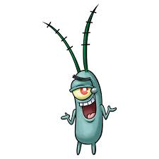

spongebob squarepants
 Cool down this summer by heading back down to Bikini Bottom with brand new episodes of SpongeBob SquarePants, premiering weekdays at 1:00 p.m. (ET/PT) starting Monday, June 19, only on Nickelodeon!
A new study suggests watching just nine minutes of the cartoon character SpongeBob SquarePants program can cause short-term attention and learning problems in 4-year-olds.
“SpongeBob SquarePants” attracts nearly 1.9 million Japanese households to his TV show daily and is raking in a growing share of the $5 billion in annual retail sales for Nickelodeon, the Viacom Inc.
Cool down this summer by heading back down to Bikini Bottom with brand new episodes of SpongeBob SquarePants, premiering weekdays at 1:00 p.m. (ET/PT) starting Monday, June 19, only on Nickelodeon!
A new study suggests watching just nine minutes of the cartoon character SpongeBob SquarePants program can cause short-term attention and learning problems in 4-year-olds.
“SpongeBob SquarePants” attracts nearly 1.9 million Japanese households to his TV show daily and is raking in a growing share of the $5 billion in annual retail sales for Nickelodeon, the Viacom Inc.
description
A square yellow sponge named SpongeBob SquarePants lives in a pineapple with his pet snail, Gary, in the city of Bikini Bottom on the floor of the Pacific Ocean. He works as a fry cook at the Krusty Krab. During his time off, SpongeBob has a knack for attracting trouble with his starfish best friend, Patrick
patirick
Visit the official site for Disney's Patrick, now on Disney+, Blu-ray, DVD and Digital.
Vanessa said: “It [filming in Richmond] was a very simple choice, I have lived in the area for many years and the film was inspired here. We loved filming here, there are so many nice areas and we tried to get all of Richmond into the film.” Vanessa drew inspiration from her personal life for this film.
Beattie Edmondson stars in this family comedy film about a woman who must look after a pug dog. Also features Gemma Jones, Cherie Lunghi, Peter Davidson, Meera Syal, Ed Skrein and more.
description
Patrick is the ignorant but humorous best friend of main character SpongeBob SquarePants. He is portrayed as being an overweight, dimwitted, pink starfish residing in the underwater city of Bikini Bottom.
sandy
At times, Sandy's name is implied to be short for "Sandra." That said, as she is mentioned having a twin brother named Randy, it's likely her parents gave her a name that rhymes. Outside the cartoon in supplementary material, she is sometimes given a middle name.
In order to live underwater, Sandy resides in a bubble-like dome and wears an atmospheric diving suit when outside her house.
If you look throughout the series - including books - you can find lots of evidence that implies that they have feelings for each other (at least on SpongeBob's part towards Sandy)! They also share many hobbies together. In fact, in the special "Truth or Square", SpongeBob and Sandy get married, albeit, for a play!
description
Sandy is portrayed as an intelligent anthropomorphic squirrel who wears a diving suit and lives underwater. The character's reception from fans has been positive. Sandy has appeared in many SpongeBob SquarePants publications, toys, and other merchandise. She also appears in the series' three films
planton

Sheldon J. Plankton and Karen Plankton are a pair of fictional characters and the main antagonists of SpongeBob SquarePants, the Nickelodeon animated television series.
Plankton is shown to be an evil mastermind through and through, with signs of having a napoleonic complex due to his very short stature. His plans always involve technological devices and weapons, all for the sake of the formula. Although sometimes, he merely wants to expand his business or ruin the Krusty Krab.
The Plankton character we're talking about falls into the zooplankton category and is specifically most likely a copepod. A wild stat about copepods: There are more copepods in the ocean than any other multicellular organism!
description
The word “plankton” comes from the Greek for “drifter” or “wanderer.” An organism is considered plankton if it is carried by tides and currents, and cannot swim well enough to move against these forces. Some plankton drift this way for their entire life cycle.